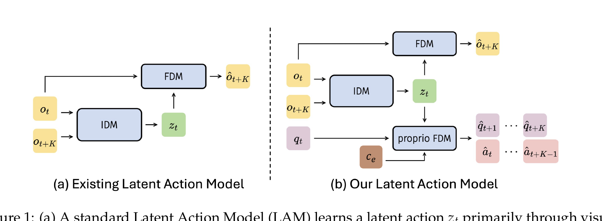

villa-X: Enhancing Latent Action Modeling in VLA Models
Xiaoyu Chen 等 · arXiv:2507.23682 v3 · 2025 技术报告 · Zotero JQTRH9RD
villa-X 同时修补 latent action 的两个断点：用 proprioceptive forward dynamics 把视觉变化 token 锚到真实动力学，再用 latent-action expert → robot-action expert 的分层联合流匹配，让中层计划真正影响低层控制。
Introduction：为什么纯视觉 latent action 仍然“不懂机器人身体”
LAPA/Genie 类方法证明可以从帧间变化发现 latent action，但像素重建天然偏爱大面积、容易看见的变化。末端旋转、夹爪开合或接触状态可能只改变少量像素，却决定动作是否成功。villa-X 因而提出两个连续问题：怎样让 latent action 对物理自由度更敏感，以及怎样让真实 action generation 在推理时真正使用 latent plan，而不是只把它当预训练初始化。
展开原文 · 问题定位
“the learned latent actions remain physically ungrounded”
Related Work：villa-X 同时改了 LAM 和 VLA 集成方式
已有 VLA 依赖动作标签；LAPA 用 latent action 给无标签视频自动贴标签，但最终丢弃 latent head；Moto-GPT/GR00T/Go-1 等尝试把 latent 与机器人动作结合，却分别存在视觉 grounding 弱、即时视觉上下文不足或 teacher forcing 不一致。villa-X 的答案是：训练 LAM 时增加 proprio-FDM，让 latent 同时解释视觉与机器人状态；训练策略时用 ACT-latent 与 ACT-robot 的联合 flow，使低层动作显式条件化中层 latent。
| 普通 LAM | 只用未来图像重建塑造 latent，容易把注意力放在外观与大像素运动。 |
| LAPA | latent 是预训练伪标签，动作微调时换 head；知识转移主要依赖主干参数。 |
| villa-X | proprio/action 监督直接塑造 latent；推理时 latent expert 仍作为 robot expert 的条件。 |
| Joint WAM | 通常联合生成视频与动作；villa-X 联合的是 latent plan 与真实动作，不要求部署时生成完整 RGB。 |
§1 只重建未来帧，为什么还不够
§2 Grounded LAM：从视觉差分到物理变化

- $z_t$
- VQ codebook 中心的连续向量，承担中层动作语义。
- $c_e$
- 数据集 ID 与控制频率；避免把本体差异错误塞进共享 latent。
- 缺标签视频
- 人类视频没有 proprioception 时省略 proprio loss，仍用视觉重建。
§3 ACT：三个 expert 的分层策略
- $\pi_{latent}(z\mid o,l)$
- 中层规划器根据当前观测和语言目标生成 latent action。
- $\pi_{robot}(a\mid z,o,l,q,c_e)$
- 低层控制器读取 latent 计划、本体状态 $q$ 和 embodiment context $c_e$，生成真实动作。
- 乘积形式
- 表示先确定抽象变化意图，再条件化具体动作；$z$ 不是最终可执行命令。
1. 学视觉变化
IDM/FDM 先从帧对得到 latent action。
输入是什么：相机图像或视频，加上任务指令和机器人当前状态。它们还是原始观测，模型尚未把它们变成可用于预测或控制的特征。
这一步究竟做什么：本步骤执行“学视觉变化”。具体来说，IDM/FDM 先从帧对得到 latent action。 这里处理的只是整条链路中的一个接口：把上一步的结果整理成下一步能够正确读取和继续计算的形式。
输出到哪里：一组比原始输入更紧凑的内部特征；它不是最终动作或画面。这个结果会交给下一步“加物理 grounding”继续处理。
为什么不能省略：它把未经处理的原始问题变成后续模块可以计算的输入，是整条链路的起点。
2. 加物理 grounding
机器人数据的 $q,a$ 监督把 token 拉向可控自由度。
输入是什么：来自上一步“学视觉变化”的产物：一组比原始输入更紧凑的内部特征；它不是最终动作或画面。本步骤还会按论文设置读取当前条件、时间步或训练信号。
这一步究竟做什么：本步骤执行“加物理 grounding”。具体来说，机器人数据的 $q,a$ 监督把 token 拉向可控自由度。 这里处理的只是整条链路中的一个接口：把上一步的结果整理成下一步能够正确读取和继续计算的形式。
输出到哪里：一组比原始输入更紧凑的内部特征；它不是最终动作或画面。这个结果会交给下一步“分层联合生成”继续处理。
为什么不能省略：只复制外观不能产生可信交互；需要把视觉表示与碰撞、关节或动力学对应起来，策略训练才有物理意义。
3. 分层联合生成
ACT-latent 先形成计划，ACT-robot 通过 blockwise causal attention 读取计划并输出动作块。
输入是什么：来自上一步“加物理 grounding”的产物：一组比原始输入更紧凑的内部特征；它不是最终动作或画面。本步骤还会按论文设置读取当前条件、时间步或训练信号。
这一步究竟做什么：ACT-latent 先形成计划，ACT-robot 通过 blockwise causal attention 读取计划并输出动作块。
输出到哪里：一个或多个候选未来、动作或轨迹，以及必要的中间状态。这是图中这条链路的最终产物，随后会进入真实执行、模型更新或指标评测。
为什么不能省略：它把前面得到的内部结果落实为可执行动作、可训练模型或可解释指标，完成从方法到结果的最后一步。
§4 联合流匹配与随机遮罩
- $x$
- 把 latent action 与真实机器人动作拼成联合目标变量。
- $x^\tau$
- 联合变量与高斯噪声的线性插值，$\tau$ 决定当前噪声强度。
- $u(x^\tau\mid x)$
- 解析目标速度，告诉网络从带噪联合状态应向哪里移动。
- $O$
- 视觉、语言、本体和 embodiment 条件；随机 attention mask 防止低层动作分支绕过 latent 计划。
训练时有一半样本完全切断 robot→latent attention；其余样本随机遮掉一半 latent token。目的是防止低层分支把中层计划当捷径，同时保留 latent 有用时的条件作用。
§5 证据与局限
实验归因与复现变量
要把性能提升归因于“物理 grounding + 分层联合生成”，至少要分别消融 proprio-FDM、embodiment context、latent→robot attention 和随机 mask。只和普通 VLA 比最终成功率无法区分是数据规模、动作专家容量还是 latent 机制带来的增益。
- 报告有/无 proprio 标签样本的比例，以及缺标签视频如何屏蔽对应损失。
- 固定视觉 LAM 后单独 probing 动作和未来本体状态，验证 latent 真的更 action-aware。
- 检查 codebook 使用率与帧间隔 $K$，避免 latent 只记录相机或背景变化。
- 在相同机器人数据与推理预算下比较不读 latent 的 ACT-robot。
- 跨本体实验必须说明 $c_e$ 包含哪些字段，不能把测试本体 ID 泄漏当泛化。
§6 路线定位
villa-X 的 LAM 属于 latent-action 数据接口，ACT 又把 latent 与动作放进联合 diffusion/flow policy。它连接 LAPA 式预训练与 Joint-WAM，但没有在部署时生成完整 RGB 未来。